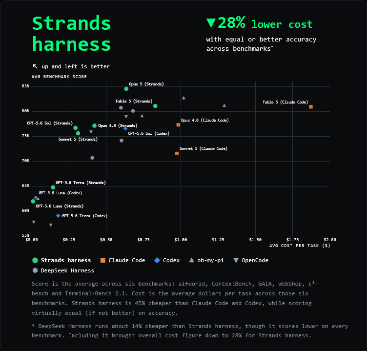
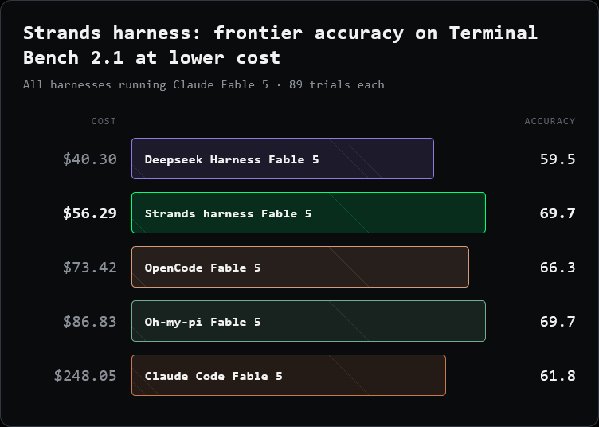

10 The New Stack 게시일 2026.09.21
AWS, 범용 AI 에이전트 하네스 Strands Harness를 오픈소스로 풀었다

AI 에이전트는 모델 하나만 붙인다고 바로 일하지 않는다. 긴 작업을 하려면 문맥 관리, 세션 저장, 도구 호출, 다른 에이전트에게 일 넘기기까지 함께 설계해야 한다. AWS는 이 운영층을 미리 묶은 Strands Harness를 오픈소스로 내놨다. 개발자는 기본 구성을 바로 쓰거나 필요한 부분만 바꿔 쓸 수 있다.
핵심 브리핑
Strands Harness는 범용 AI 에이전트를 빠르게 띄우기 위한 오픈소스 하네스다. 개발자가 직접 이어 붙이던 도구, 문맥, 메모리, 세션 기능을 기본 구성으로 묶어 준다. 비개발자 관점에서는 '에이전트 운영용 공용 뼈대'에 가깝다.
이 도구는 AWS가 2025년 5월 공개한 오픈소스 Python SDK인 Strands Agents 위에서 동작한다. AWS의 Marc Brooker는 Strands Harness가 기존 SDK 위에 놓이는 사전 구성 에이전트라고 설명했다. 기본 제공 기능에는 파일, 셸, 웹 도구가 들어간다. 문맥 관리, 메모리, 영속 세션, 프롬프트 캐싱, 다른 에이전트로의 위임도 포함한다.
대부분 기능은 AWS 인프라에 묶이지 않는다. 에이전트 루프, 도구, 문맥 관리, 세션 처리, 위임은 오픈소스 공개본에 포함된다. 기본값으로는 에이전트를 실행하는 컴퓨터에서 돌아간다. 예외는 기반 모델 호출이다. 기본 설정은 Amazon Bedrock을 쓰지만, AWS는 한 줄 수정으로 다른 제공자로 바꿀 수 있다고 밝혔다. Anthropic, OpenAI, Google, Ollama 기반 로컬 모델도 쓸 수 있다.
Strands Harness에는 CLI도 들어간다. 개발자는 여기서 모델, 프롬프트, 도구를 고른 뒤 /export로 Python이나 TypeScript 코드로 내보낼 수 있다. Strands Harness 자체를 코딩 에이전트가 이해하도록 돕는 Agent Skill도 포함했다. AWS, GCP, Azure, Cloudflare, Modal용 배포 설정 생성도 지원한다고 밝혔다.


도입 가치
AWS는 같은 모델을 써도 하네스 설계에 따라 비용과 성능이 달라질 수 있다고 주장했다. 비교는 ALFWorld, ContextBench, GAIA, WebShop, τ³-bench, Terminal-Bench 2.1의 여섯 벤치마크 평균 점수와 과제당 평균 비용으로 했다. AWS는 Claude Code와 Codex 대비 Strands Harness가 정확도는 대체로 비슷했고 비용은 45% 낮았다고 밝혔다. 다만 DeepSeek Harness를 포함한 넓은 비교에서는 격차가 28%로 줄었다. AWS는 이 수치가 자사 테스트 결과라고 밝혔다.
AWS는 비용 차이의 배경으로 문맥 관리 기본값을 꼽았다. Strands Harness는 큰 도구 출력은 잘라낸다. 문맥 창이 임계값을 넘으면 내용을 압축한다. 문맥이 넘치면 에이전트 루프 안에서 복구를 시도한다. Terminal Bench 2.1에서는 Fable 5를 쓴 Strands Harness가 89회 실험에서 56.29달러가 들었다. 같은 조건의 Claude Code는 248.05달러였다. 점수는 Strands Harness가 69.7, Claude Code가 61.8이었다. DeepSeek Harness는 40.30달러로 더 쌌지만 점수는 59.5였다.
| 비교 대상 | 비용 | 점수 | 조건 |
|---|---|---|---|
| Strands Harness | 56.29달러 | 69.7 | Terminal Bench 2.1, 89회 실험 |
| Claude Code | 248.05달러 | 61.8 | Terminal Bench 2.1, 89회 실험 |
| DeepSeek Harness | 40.30달러 | 59.5 | Terminal Bench 2.1, 89회 실험 |
업계의 움직임
The New Stack 외에 MarkTechPost도 이 소식을 함께 다뤘다. 보도 초점은 오픈소스 공개 자체보다 비용 절감 주장과 범용 에이전트 운영 구조에 맞춰졌다. 기사에 실린 경쟁사 공식 반응은 아직 확인되지 않았다.
시사점과 체크포인트
금융IT 조직이 볼 대목은 모델 교체보다 운영층 표준화다. 같은 모델을 써도 세션 저장, 문맥 축약, 도구 출력 제어 방식에 따라 비용과 성능이 달라질 수 있다. 내부 챗봇, 코파일럿, 운영 자동화 에이전트를 따로 만들고 있다면 공통 하네스로 묶을 여지가 있는지 점검할 만하다.
우리 회사라면 다음을 먼저 보자.
- 에이전트가 다룰 파일, 셸, 웹 도구 권한을 어떻게 분리할지
- 세션 상태를 어디에 저장할지와 보존 기간을 어떻게 둘지
- Bedrock 외 모델 제공자로 바꿨을 때 보안 심사와 비용 집계를 어떻게 맞출지
- 문맥 압축과 출력 잘라내기가 감사 추적과 답변 품질에 어떤 영향을 주는지
AWS의 비용 수치는 자체 테스트다. 벤치마크 구성과 실제 사내 업무는 다를 수 있다. AgentCore와 기술적으로 가까운 구조라는 설명도 있어, 오픈소스로 시작한 뒤 관리형 서비스로 옮기기 쉬운 동선이 깔려 있다. 도입 검토 때는 멀티클라우드 자유도와 장기 운영 종속을 함께 따져야 한다.
주요 용어
원문 정보
제목: AWS open-sources an AI agent it says is 45% cheaper than Claude Code and Codex
게시일: 2026.09.21